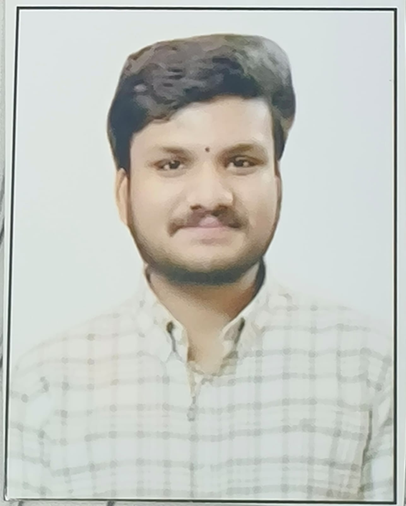

About Me.

Sathwik Ganji
I am a Computer Science and Engineering student at Vasireddy Venkatadri Institute of Technology (VVIT), focused on Cloud Computing, DevOps and Software Engineering.
I build practical projects using AWS, Linux, Docker, Kubernetes, Terraform, Git, GitHub Actions and CI/CD, with a focus on automation, deployment, infrastructure and reliable engineering.
I am building toward Cloud Engineer and DevOps Engineer roles, with a long-term goal of becoming a Cloud Solutions Architect.
Education: B.Tech — Computer Science & Engineering, VVIT
☁ AWS🐳 Docker☸ Kubernetes🏗 Terraform🐧 Linux⚙ CI/CD